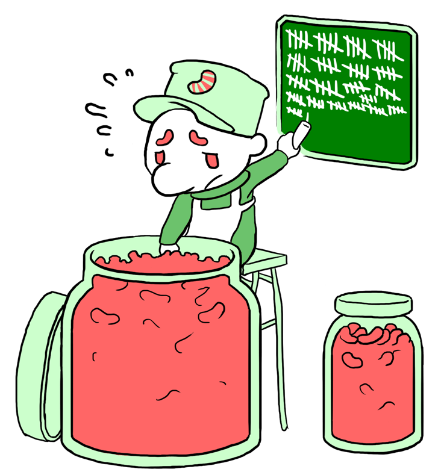
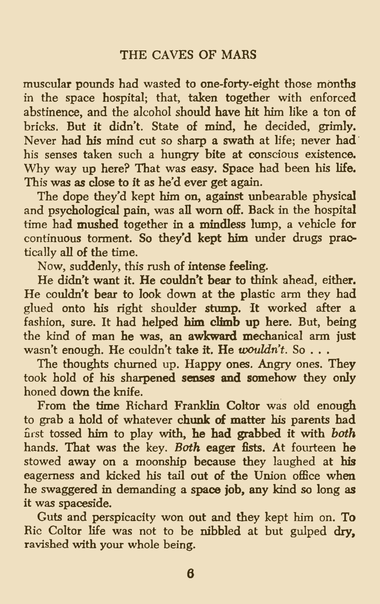
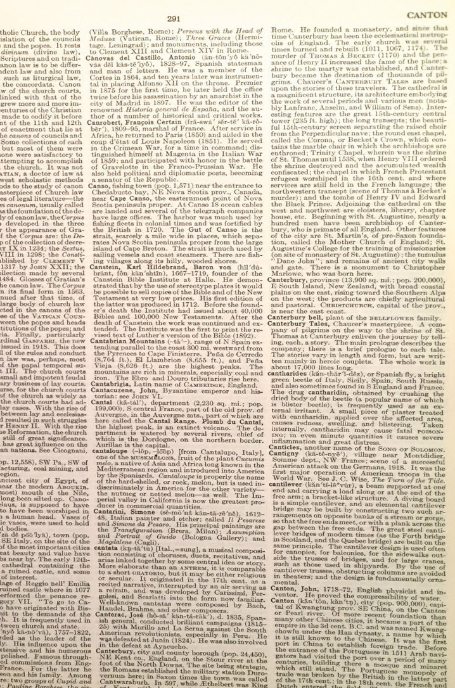
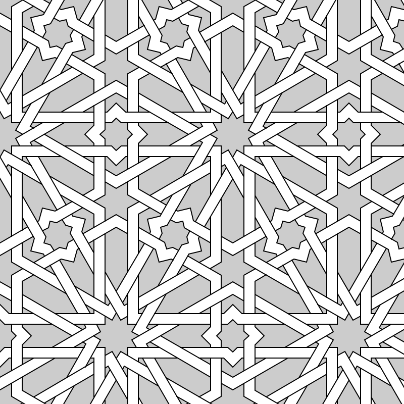
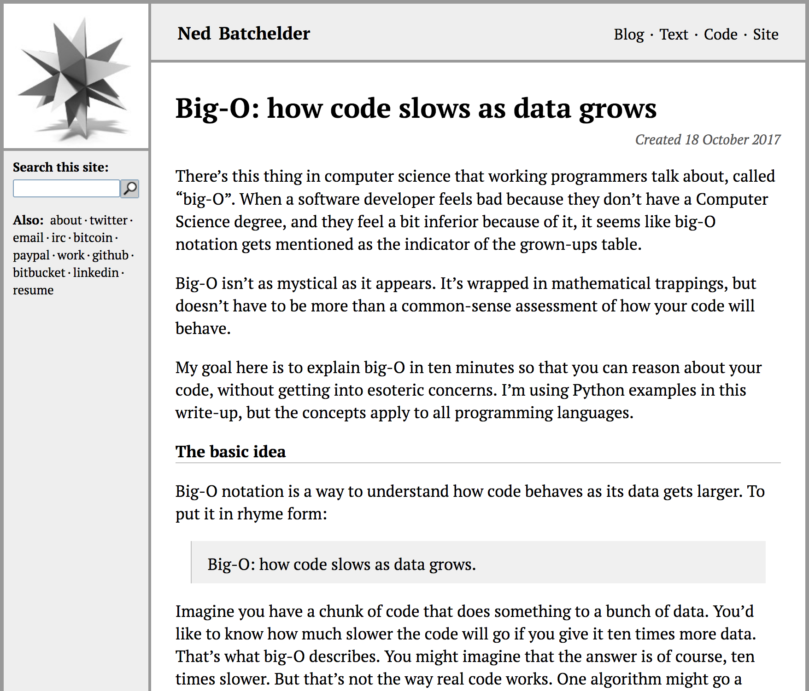
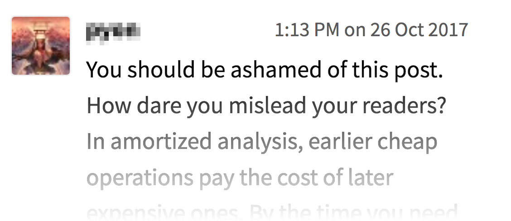
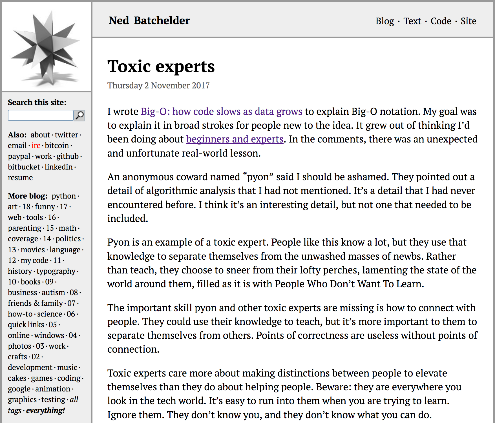

One of the things that interests me about writing software is the two mindsets
that inform it. One is computer science, another is software engineering.
Computer science is a branch of mathematics. It's full of complex notation about
abstract ideas, and proofs of mathematical principles. Software engineering
is focused on how to actually write software that works. The two sides interact,
but they are very different.
If you are working in software, but don't have a computer science degree, you
might feel like there are mysteries and incantations you are missing that you need.
For the most part, computer science is about things you don't encounter in day-to-day
software development.
But one topic that does cross the boundary is a thing called algorithmic
analysis, or Big-O notation.
Big-O
How code slows as data grows
Not the same as running time
Big trend over time
10× data → ??× time
Mathy, but doesn't have to be
Big-O isn't as mystical as it seems at first. Big-O is a way of
characterizing how your code's speed is affected by the size of the data it's
working on. There's a lot of theory behind it, but it doesn't have to be more
than a common-sense assessment of how your code will behave as it works on more
data.
In rhyming form, "How code slows as data grows." Big-O isn't about how fast
your code goes at any particular time. It's about how the running time changes
as the data size changes.
Imagine you have a chunk of code that does something to a bunch of data.
You’d like to know how much slower the code will go if you give it ten times
more data. That’s what big-O describes. You might imagine that the answer is of
course, ten times slower. But that’s not the way real code works. One algorithm
might go a hundred times slower. Another might not go any slower at all. Big-O
is a way to analyze the code and determine the slow-down factor.
Big-O notation has a mathematical flavor, but isn't really that complicated
in day-to-day use. You can use it without understanding all of the intricacies.
Terminology
O(blahblah N blah)
N: how much data
"Order of"
Not a function!
Let's get some terminology straight at the beginning. The Big-O characterization
of some code will look like "O( blah blah N blah )". The N in there is the size
of your data. The O stands for "Order of," as in, "The code's run time grows on the order of blah blah N blah."
The blah blah is an expression using N, like O(N) or O(N2).
Although O(N) looks like calling a function named O, this isn't a function call.
It's just a notation about N.
Counting beans

O(N)
O(1)
for x in my_list:
len(my_list)
Let's consider a real-world example. Suppose you have jars of jelly beans.
You want to know how many are in each jar. The first way to do it is to count
each bean, as this guy on the left is doing.
It's pretty clear that the time it will take to count the beans is
proportional to the number of beans. If one jar has five times as many beans as
another, it will take five times longer to count.
The time it takes to complete the work is proportional to the number of
beans (or amount of data), so we say it is O(N). The time grows in the
same way that N does. It's on the order of N.
Now suppose we arrange our data (beans) differently. We put a label on each
jar, indicating how many beans are in the jar. Now the time to complete the
task changes enormously, since our worker just has to read the label! Now no
matter how many beans are in the jar, it takes the same amount of time to
determine how many beans there are (assuming we trust the labels).
This is now a constant-time task: no matter how large the jar, it will take
the same amount of time to determine the number. We just read it off the label.
This is known as O(1), which is a funny way to write, "the run time doesn't
depend on N at all."
You might say labelling the jars is cheating. It's not: big-O is all about
analyzing algorithms and data structures to understand their behavior. By
labelling the jar, we chose a different data structure that let us use a better
algorithm.
Finding words
Novel

O(N)
Encyclopedia

O(log N)
Let's consider another real-world example: finding words in a book. If I
hand you a novel, and ask you to find the word "horse" in it, you would start
at the beginning and read until you found it. This is another O(N) task. If
you double the length of the novel, it could take you twice as long to find
it.
Now I hand you another book: an encyclopedia. Finding the word "horse" is
easier now. You open to the middle of the book, and see whether the
desired word is before or after the word on the page. If it's before, then you
open to the middle of the left-hand side, and continue your divide-and-conquer
strategy until you find the word.
In this case, doubling the size of the encyclopedia doesn't double the time it
takes. It just adds one more divide-in-half step to the work. This is known
as a log-N task: the number of steps grows as the number of digits in N
grows.
Counting beans and finding words are both examples of real-world tasks that
have very different growth rates, depending on the details of the job. Big-O
notation is a way to understand those growth rates. Understanding the algorithmic
complexity of your code is important for writing efficient code that performs
as you want.
Other terms
O(1): constant time
O(N): linear
O(N2): quadratic
Big-O:
complexity
time complexity
algorithmic complexity
asymptotic complexity
A little more terminology to get out of the way. Some of the more
common big-O characterizations have short-hand names. O(1) is sometimes
called "constant time" or just "constant" because it doesn't change as
the data size changes. O(N) is often called "linear" because the time
is a linear expression of the data size. And O(N2) is called
"quadratic" because the time is a quadratic expression of the data size.
The whole idea of big-O is also known as "algorithmic complexity" or
"algorithmic analysis." Those sound complicated and fancy, but it's all the
same stuff. Sometimes the big-O characterization is called the "complexity" of
an algorithm, or the "time complexity."
Determining Big-O
Identify your code
Identify N
Count the steps in a typical run
Keep the most significant part
OK, so how can you determine the Big-O complexity of a piece of code?
First, figure out what piece of code you are going to consider. This may
seem obvious, but if you are unclear about the boundaries of the code, you
may get an answer that is useless to you. Working in large systems, it's
easy to focus on too small a part of the code, or to try to think about
too large a piece of the system.
Second, identify what N means. This will be the size of the data the
function is working on. Usually, it will be fairly obvious. But sometimes,
there will be more than one way the data can change size, and you need to
figure out which one you are concerned with. N will be the size of that
data.
Third is the real work: you read your code carefully, considering
how many steps of work it will do in a typical execution run. Keep track
of the number of steps, expressed in terms of N. "Typical" here means
two things: you can consider typical real-world data, and also you should
think about the average performance over many runs of the code.
Once you have a complete expression for the number of steps, you simplify
it by throwing parts of it away. Big-O is all about how the run time changes
as data gets larger and larger. So only the most significant terms need to be
kept.
For example, if you counted 2N+1 steps, then you have an O(N) algorithm. There's
no point keeping the +1, because as N grows larger and larger, the +1 becomes
less and less significant. Also, the 2 coefficient doesn't matter: 2N grows the
same as N does: if N doubles, then 2N doubles, and N doubles. So O(2N+1) is the
same as O(N), and we keep the simpler form.
Notice there are no units involved here. We aren't trying to calculate the
actual running time of the code. We're trying to understand how the running
time changes as the data size changes.
About "typical": big-O doesn't by itself imply typical runs. You can also
talk about the big-O of the worst case, which we'll touch on later. But when
people casually mention the big-O complexity of code, they usually mean the
typical, or expected running time. If you are unsure which people mean, ask
for clarification.
An Example
moms = [
("Ned", "Eleanor"),
("Max", "Susan"),
("Susan", "Shelly"), ...
]
def find_mom(moms, child):
"""Find the mom of `child`."""
for child_name, mom_name in moms: # 3 * N/2
if child == child_name: # 1 * N/2
return mom_name # 1
return None
3N/2 + N/2 + 1→ 2N + 1→ O(N)
find_mom is O(N)
Here's a real example:
moms = [
("Ned", "Eleanor"),
("Max", "Susan"),
("Susan", "Shelly"), ...
]
def find_mom(moms, child):
"""Find the mom of `child`."""
for child_name, mom_name in moms:
if child == child_name:
return mom_name
return None
The find_mom function searches a list of tuples looking for a
match on the first element of the tuple. In this case, N is the length of the
list of tuples.
Since we don't know where any given value is in the list, we don't know
whether we'll find it at the beginning of the list, or near the end. So we
guess that over many runs of the function, we'll have to look at (on average)
half the entries in the list.
In our average run, looping over the moms will happen N/2 times. Each time
around, there's one step to get the next element, and one step each to assign
the tuple to child_name and mom_name. So the for-loop line gives us 3*N/2
steps.
The comparison is just one step, but since we loop N/2 times, it contributes
another N/2 steps. The return statement happens only once, for 1 more
step.
The grand total is 3N/2 + N/2 + 1, or 2N+1. Since we are only interested
in the large-scale growth trends as N gets very large, we drop the +1, and the
2 coefficient, to get O(N).
Our analysis has shown us this is a linear algorithm: when the moms list
doubles in size, we can expect find_mom to take twice as long.
Another example
def how_many_grandmothers(moms):
"""How many moms are grand-moms?"""
grandmothers = 0
for child, mom in moms: # N
grandma = find_mom(moms, mom) # N * N
if grandma: # N
grandmothers += 1 # kN
return grandmothers # 1
N2 + kN + 1→ O(N2)
Let's consider another example. With our moms data structure, let's
consider this function to count how many of the entries in our list are
grandmothers: the mom in the pair also appears as a child in another pair:
def how_many_grandmothers(moms):
"""How many moms are grand-moms?"""
grandmothers = 0
for child, mom in moms:
grandma = find_mom(moms, mom)
if grandma:
grandmothers += 1
return grandmothers
We know that we are only going to keep the most significant component,
and we don't care about the coefficients, so we won't bother to track them.
Instead we'll just note the exponent for each part of the code.
Here we're going to loop over the entire moms list so our loop will execute
N times. The for statement itself will contribute N steps.
The next line is the interesting one though: we call find_mom. We just did
the analysis of find_mom, so we know it's O(N). This line contributes N steps
each time it's executed, but it's executed N times, once for each execution of
the loop. So this line contributes N2 steps.
We can continue with the rest of the analysis, but note that we already have
an N2 component, so N components or constant components will
eventually be discarded, so we can skip collecting them.
Because the largest component is N2, the result is O(N2).
Ideal: O(1)
Seems impossible!?
len(mylist)
mydict[some_key]
The best possible complexity is constant-time: no matter how much data, it
always takes the same amount of time. This seems kind of impossible. How can
an algorithm take a fixed amount of time no matter how much data it has to work
on?
We saw one example with the labelled jars of jelly beans. Python lists work
the same way: getting the length of a Python list is an O(1) operation because
the list stores its length outside of the actual data of the list, just as the
bean jar has a count on the outside.
A more interesting example is looking up a key in a dict. In the typical
case, looking up a key in a dict takes the same amount of time no matter how
large the dict is. This is why dictionaries underpin every name lookup in
Python: they are fast. I don't have time to go into how this works, but it's
because dictionaries are a clever data structure called a hash table. Later
we'll talk about the worst-case scenarios, but for the typical (that is to say,
almost every) case, dictionary access is O(1).
The Graph
No discussion of big-O notation would be complete without showing a graph of
how various complexities grow. Here the x-axis is the growth of data, and the
y-axis is running time. There are no units here, because as with all the rest
of this discussion, we are only looking for a rough characterization of how the
running time relates to the data size.
You can see here that N2 can get really bad really fast. If there's
one thing to take away from this entire talk, it's "avoid N2".
Python complexities
Lists [a, b, c, ...]
mylist.append(val)
O(1)
mylist[i]
O(1)
val in mylist
O(N)O(N)
for val in mylist:
O(N)
mylist.sort()
O(N log N)
Dicts{k:v, ...}
mydict[key] = val
O(1)
mydict[key]
O(1)
key in mydict
O(1)O(1)
for key in mydict:
O(N)
Sets{a, b, c, ...}
myset.add(val)
O(1)
val in myset
O(1)O(1)
for val in myset:
O(N)
☝ Pro-tip: replace lists with sets
To analyze your code, you have to understand the complexities of the Python
primitives you'll be using. These tables show the typical time complexity of
common Python operations.
Many of the similar operations on list, dict, and set have the same
complexities. A big difference is finding an element in each. In particular,
finding an element in a list is O(N), while finding an element in a dict or set
is O(1). This can make a huge difference in your program's speed. If you can
replace a list lookup with a set lookup, do it.
Trade-offs
"Replace list lookup with set lookup"
#.. make a list ..
if thing in my_list: # O(N)
Good
#.. make a set ..
if thing in my_set: # O(1)
Bad
#.. make a list ..
my_set = set(my_list) # O(N)
if thing in my_set: # O(1)
Good
#.. make a list ..
my_set = set(my_list) # O(N)
for many_times:
if thing in my_set: # O(1)
Replacing a list lookup with a set lookup is good, but you have to be careful.
The best way is to not create a list in the first place. Instead, create a set
from the start.
The worst way to go is to have a list in hand, and then make a set from it,
then do the lookup in the set. The set lookup is a fast constant-time lookup,
but what did it cost to create the set? Creating a set from an iterable is
an O(N) operation because every element of the iterable has to be considered.
Making a set just to perform one lookup is a waste of time. But it can be
a good trade-off if you can make the set once and then use it for many lookups.
Slow
def __init__(self):
self.items = []
def __getitem__(self, pt):
for key, value in self.items:
if key == pt:
return value
value = []
self.items.append((pt, value))
return value
Fast
def __init__(self):
self.items = {} # pt -> value
self.rounds = {} # pt -> pt
def __getitem__(self, pt):
val = self.items.get(pt)
if val is not None:
return val
for jitter in [0, 0.5]:
pt_rnd = rounded(pt, jitter)
pt0 = self.rounds.get(pt_rnd)
if pt0 is not None:
return self.items[pt0]
self.items[pt] = val = []
for jitter in [0, 0.5]:
pt_rnd = rounded(pt, jitter)
self.rounds[pt_rnd] = pt
return val
O(N) O(1)
def __init__(self):
self.items = []
def __getitem__(self, pt):
for key, value in self.items:
if key == pt:
return value
value = []
self.items.append((pt, value))
return value
def __init__(self):
self.items = {} # pt -> value
self.rounds = {} # pt -> pt
def __getitem__(self, pt):
val = self.items.get(pt)
if val is not None:
return val
for jitter in [0, 0.5]:
pt_rnd = rounded(pt, jitter)
pt0 = self.rounds.get(pt_rnd)
if pt0 is not None:
return self.items[pt0]self.items[pt] = val = []
for jitter in [0, 0.5]:
pt_rnd = rounded(pt, jitter)
self.rounds[pt_rnd] = pt
return val

2000 pts
20s ☹
0.4s! ☺
Here's an example of two implementations of a function. Don't worry about
the details of the code. Although the left one is shorter, and uses fewer data
structures, it's slower. If we look at the lines that deal with the data, we
can see why. The left code has an O(N) line, while the right code only has
O(1) lines.
This code operates on a collection of points. You can't see it here, but in
the real program this function is called once for each point in the collection,
so the O(N) line in effect becomes an O(N²) line. The left code made the whole
program O(N²), while the right code made it O(N).
Running with 2000 points, the N² code took 20 seconds. Switching to the
O(N) code reduced the time to 0.4 seconds. You might not consider 2000 points
to be a lot of data. But for that size data the difference between O(N) and
O(N²) can be the difference between two thousand and four million. It can make
a big difference.
More possibilities
Complexities
O(N3), O(N4), ...
O(2N), O(NN)
O(N!)
Dimensions
N, M, k, etc
O((n+k) log n)
The possibilities for algorithmic complexities go beyond the 1, N, N² that
we've seen so far. There are all sorts of other forms that can occur, usually
worse than the N² we've been demonizing here so far. Considering all possible
combinations of N boolean values will give you O(2N). Operating on all
permutations of N values will be O(N!).
You might also need more than one varying dimension. Sometimes your code
will deal with data that can grow in more than one way. In that case, you use
another variable, and describe the complexity in terms of both. As an example,
a line intersection algorithm I used has a complexity of O((n+k) log n), where
n is the number of lines, and k is the number of intersections.
Don't fall into the trap of thinking that Big-O is everything though. What
you really care about is the running time of your code on your actual expected
data. An O(N²) algorithm might be faster than an O(N) algorithm for the range
of data you'll be using.
Here I've zoomed into the graph down near the small numbers. The curves are
all scrambled up because the actual coefficients I used make the constant-time
algorithm slower than the others for the very small numbers.
When we discarded the coefficients and smaller exponents, it was because as
N grows very large, they don't matter. But in actually running your code, those
components are still there, and for small data, they may be more important than
the larger ones we kept.
Don't get fancy unless you have to. For small data the simplest algorithms,
even if they have worse complexity, are best.
Advanced: Amortization
Long-term averaging
Operations can take different times
Let's touch quickly on some advanced pieces.
Big-O is about the long-term growth of an algorithm. That can involve
averaging many operations. Individual operations may not all take the
same amount of time. This is called amortization, which is a fancy
word that means averaging.
For example, we say that appending to a list is O(1), but that doesn't
mean that every call to append() takes the same amount of time. In fact,
most of the calls take the same short time, but some of the calls take longer,
and those long calls get longer as the list gets longer. But they also get
less frequent, so the average is a constant time.
Advanced: Worst case
Typical case vs worst case
# Typical
s = set()
for i in range(50000):
s.add(i * 47) # O(1)
# O(N), wall time: 10.3 ms
# Worst
s = set()
for i in range(50000):
s.add(i * (2**61-1)) # O(N)
# O(N²), wall time: 34.2 s (3300x slower!)
Dicts also
Hash randomization prevents DDOS
So far all of this discussion has been about the typical, or expected time
for operations. That is, the time the algorithm will take for a typical data
set, averaged over many runs. Sometimes it's also important to consider the
worst case. How will the algorithm perform if given specially crafted data
that will make it take as long as possible?
As an example, looking up a value in a set is typically O(1), which makes
building a set an O(N) operation. But if you know how values are hashed,
you can use a collection of values that all hash to the same value. This
worst-case scenario makes the lookup O(N), which makes building the set O(N²).
Here are a typical case and a worst case:
# Typical
s = set()
for i in range(50000):
s.add(i * 47) # O(1)
# O(N), wall time: 10.3 ms
# Worst
s = set()
for i in range(50000):
s.add(i * (2**61-1)) # O(N)
# O(N²), wall time: 34.2 s (3300x slower!)
Dictionaries have the same worst-case behavior. This was the basis for a
denial-of-service attack against web servers. The defense against the attack
was hash randomization, which prevented the attackers from knowing how strings
would be hashed.
Advanced: more math
Lots more: O, o, Ω, ω, Θ
You don't need it
Lastly, if you do more research into this, there is much more math involved,
with more symbols. Mathematicians have used every letter that sounds like or
looks like O to mean something for algorithmic analysis. Know that for
day-to-day programming, you already have everything you need. If you enjoy the
math, go for it, but don't feel like you have to.
Experts



If you do discuss this more, a word of warning: experts are not always nice.
When I began thinking about this topic last fall,
I wrote it up on my blog.
A lot of people seemed to like it.
But one commenter was less pleased. While their tone could use some work,
I appreciated the technical point they tried to make. I looked into it more
and decided they were actually wrong about it. They didn't agree.